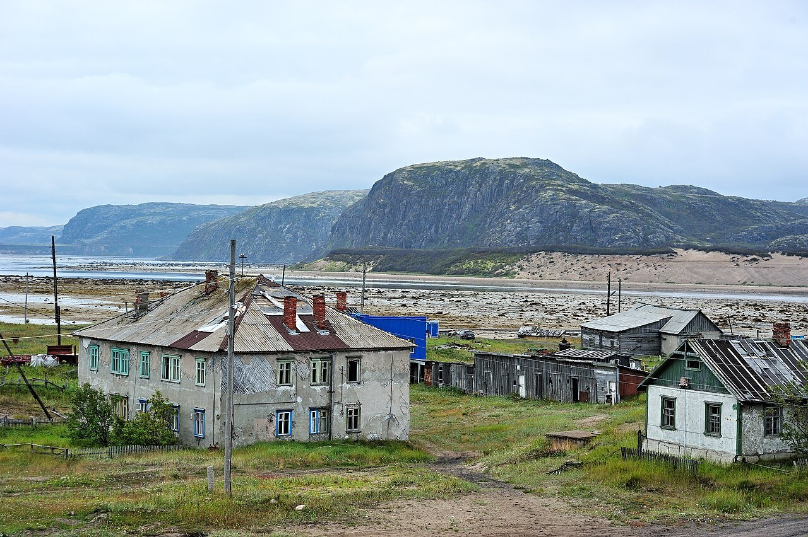

ТОМ II · ЛИСТ M · 01 / 06
ПУСТОЙ ДОМ
Что обряд делает с домом и что перепись говорит о пустых
Дом при смерти, гроб как дом, три исследования домов и посёлков, которые люди покидают, государственный подсчёт деревень без зарегистрированных жителей и то, что всё это может и не может сказать вместе.
Записано в XIX–XX вв.; данные переписей 2002–2010 · Восточнославянские традиции (часть материала — вне России); Российская Федерация (перепись) · Восточнославянский народный обычай и православная практика
ЧАСТЬ I · ДОМ ПРИ СМЕРТИ
Дом, который сломан
Обзор Марии Андрюниной по украинским, белорусским, западнорусским и польским похоронным обрядам сообщает: при смерти открывали двери и окна, делали отверстия в крыше или потолке, чтобы смерть могла войти, а душа выйти. По её описанию, дом после этого считали сломанным: его священные границы отменены, и неуспокоенная душа могла его посещать, что делало его опасным для живых.
Материал здесь важен. Обряды в этой статье происходят с западных и южных окраин восточнославянского мира и из Польши, и лист не выдаёт их за единый русский обычай. Та же статья сообщает обратное для новых построек: новый дом считали незавершённым до первой смерти в нём.

ЧАСТЬ I · ОКНО
Окно
Работа Елены Левкиевской об окне в традиционной культуре восточных славян видит в нём обрядовые вход и выход между этим миром и иным. В похоронных обрядах и рассказах о смерти через него входят в дом и выходят из него души умерших и мифологические существа. Выбросить что-нибудь в окно — значит избавиться от опасной или нечистой вещи. В той же традиции дом без окон — жилище чужого, существа из другого мира.
Рядом с открытыми окнами смертного одра это даёт жилище, в котором отверстия — рабочие части обряда. Работа занимает пять страниц и обобщает всех восточных славян, а атласу был доступен только её реферат. Она задаёт вопрос; она не описывает какую-либо одну деревню.
ЧАСТЬ II · ГРОБ КАК ДОМ
Гроб как дом
Статья Анны Плотниковой о земных местах смерти исходит из славянского представления о смерти как переходе в иной мир, где умерший обретает дом. Гроб, могила и погост читаются как земные формы этого дома. Гроб порой строят как дом, с оконными проёмами, и внутри он может повторять жилой дом: красный угол, постель, предметы обихода. Похоронные причитания называют его холодным тёмным домом без окон, а некоторые слова для «гроба» восходят к слову «дом».
По тому же прочтению мёртвые остаются связаны с домом, который покинули, а похоронные обычаи работают на то, чтобы их отделить: меняют путь из дома или убирают вещи умершего. Статья охватывает славянские традиции широко. Какие из этих деталей записаны для русских регионов, пока не прослежено, а библиографическая запись статьи неполна (см. примечание к источнику).
M / ПОКИДАЯ ДОМ
Письменная молитва в оставляемом доме, 2015–2017
Андрей Мороз, фольклорист, описывает три случая, встретившиеся ему в полевой работе в 2015, 2016 и 2017 годах, и сделанную из них гипотезу. В июле 2015 года информант в Вельском районе Архангельской области показал экспедиции РГГУ деревню, где при травяном пожаре сгорели все дома, кроме двух. Он рассказал, что в доме отсутствующего соседа нашёл на буфете рукописные листы защитной молитвы и что у этого дома огонь свернул в сторону. Самих этих листов Мороз не увидел, потому что жена информанта отказалась их показывать, но в доме он заметил на лавке два листа с переписанными молитвами. В июле 2016 года экспедиции ВШЭ в Злынковском районе Брянской области, лежащем в зоне чернобыльского загрязнения, показали опустошённый дом, сданный государству, со снятым полом и наполовину разрушенной печью, где на угловом столике в кухне лежала небольшая записка с короткой защитной формулой. В июле 2017 года Мороз с коллегами обследовал брошенные дома в Малой Шалге Каргопольского района и нашёл в одном сшитую тетрадь с пастушеским заговором на выступе шкафа, который делит избу.
Общее у трёх случаев, по его словам, в том, что дома оставлены насовсем или надолго, что на виду лежит рукописный священный текст, что у каждого текста заявленная функция оберега и что каждый лежит посередине жилой части дома, около матицы, которая её делит. Он связывает практику с переездом сельских жителей в города и использованием деревенских домов как дач и добавляет, что две дачницы в Судроме хранили заговоры от воров в потайных местах у двери. Он прямо говорит, что практика может быть новой, что для чернобыльского дома причины неясны и что насколько она распространена, не исследовано, так как людей, надолго уезжающих из своих домов, об этом не опрашивали (статья в журнале «Культура славян и культура евреев: диалог, сходства, различия», 2019).
M / ЖИТЬ В УМИРАЮЩЕМ СЕЛЕ
Лесной посёлок глазами старших жителей, 2018
Т. В. Жигальцова, психолог, составила карту того, как старшие жители видят лесопромышленный посёлок Комсомольский Вельского района Архангельской области, по 32 анкетам и 10 интервью с людьми от 50 лет. В заглавии посёлок назван заброшенным, но в нём живут, и в статье сказано, что большинство опрошенных хотело бы переехать, все назвали своё проживание вынужденным, но описывали посёлок как свою «жизнь», «родину» и «дом». Среди мест, вызывающих жалость, названы пустая школа (28,1% ответов), заброшенные дома (15,6%) и больница (12,5%); среди мест, вызывающих стыд, — несанкционированная свалка (21%).
Кладбище появляется в ответах дважды. Один респондент назвал его среди печальных мест посёлка вместе с «умиранием» посёлка, а в списке стыдных мест есть «заброшенные могилы на кладбище»; один человек пишет, что переедет «к могилам предков», поближе к родне. На карте кладбище и свалка находятся за физической границей посёлка, в зоне отрицательных чувств. Это один посёлок и небольшая выборка, анкета составлена автором, и статья не спрашивает, во что верят жители о мёртвых; она подтверждает лишь, что в одном северном посёлке неухоженная могила входит в число того, что воспринимается как неблагополучие.
ЧАСТЬ III · НЕЖИЛАЯ ДЕРЕВНЯ
Как считают пустую деревню
| Сообщение | Цифра | Что считается |
|---|---|---|
| ТАСС, 16 дек. 2011, об официальном докладе по переписи 2010 | 19 400 деревень без жителей, на 48% больше, чем при прошлой переписи | Деревни, существующие де-юре и не имеющие зарегистрированных жителей |
| OSW, Варшава, 21 дек. 2011 | Всего 134 000 деревень, на 8 500 меньше, чем в 2002 | Населённые пункты, учтённые как деревни; в сообщении падение объяснено деревнями без жителей и слиянием административных единиц |
| RTE, 6 апр. 2011, со ссылкой на главу Росстата | Деревень без населения стало больше: с 13 000 до 19 400; 36 200 деревень с менее чем десятью жителями | Число жителей в деревне, 2002 и 2010 |

ЧАСТЬ IV · ЧТО ЧАСТИ МОГУТ И НЕ МОГУТ СКАЗАТЬ
Свидетельства, держащиеся порознь
| Часть | Свидетельства | Корпус | Что может показать | Чего показать не может |
|---|---|---|---|---|
| I. Дом при смерти | Андрюнина (аннотация); Левкиевская (аннотация) | Украинская, белорусская, западнорусская и польская традиции; восточные славяне вообще | Что отверстия дома входили в обряд смерти в этих традициях | Единый русский обычай; какую-либо одну деревню |
| II. Гроб как дом | Плотникова (выдержка; запись неполна) | Славянские традиции вообще | Что гроб, могилу и кладбище читают как дом умершего | Какие подробности записаны в русских регионах |
| III. Нежилая деревня | Сообщения ТАСС, OSW, RTE о переписи 2010 года | Россия, статистика, 2002–2010 | Что государство насчитало 19 400 деревень без зарегистрированных жителей | Сколько домов стоит; во что кто-либо верит на их счёт |
| M. Оставление дома | Мороз (полный текст); Жигальцова (статья); Балабейкина (статья) | Три дома в Архангельской и Брянской областях, 2015–2017; один лесной посёлок, 32 анкеты и 10 интервью; четыре района Карелии | Что в трёх покидаемых домах оставляли рукописные защитные тексты; как пожилые жители одного посёлка чувствуют его места; что 14 посёлков упразднены административным актом и что два места до сих пор собирают гостей ради мёртвых | Насколько распространена практика; во что кто-либо верит насчёт мёртвых; числа могил, жителей и посетителей |
| IV. Связь | Не найдена | — | Ничего: ни один прочитанный источник не связывает пустой дом с обрядами смерти частей I и II | Что пустые дома считают домами мёртвых |

Аппарат источники · связанные листы · термины
Источники этого листа
- andryunina-house Андрюнина, Мария А. — Anthropomorphic Symbolism of House in Funeral and Remembrance Rites: The Body, the Soul and the Sacrifice (Ukrainian, Belorusian, Western-Russian and Polish Traditions) (n.d.)
- lewkijewskaja2004 Левкиевская, Елена Е. (Jelena Lewkijewskaja); пер. Ирина Лаппо — Semantyka okna w tradycyjnej kulturze Słowian Wschodnich (2004)
- plotnikova-loci Плотникова, Анна — The Earthly Loci of Death: The Coffin, the Grave, the Cemetery (n.d.)
- tass2011-census ТАСС (Итар-ТАСС) — Население России составляет 142 857 000 человек, средний возраст 39 лет (сообщение об итогах переписи 2010 года) (2011)
- osw2011-census Центр восточных исследований (OSW), Варшава — The results of the 2010 census – a deepening demographic crisis in Russia (2011)
- rte2011-villages RTE (Raidió Teilifís Éireann), новостной репортаж — Towns, villages a dying phenomenon in Russia (2011)
- moroz2019 Мороз, Андрей Б. — Молитва в брошенном доме: новые апотропеические практики? (2019)
- zhigaltsova2018 Жигальцова, Т. В. — Образно-эмоциональное восприятие жителями пожилого возраста заброшенного лесного поселка (Арктическая территория Архангельской области) (2018)
- balabeikina2023 Балабейкина, О. А.; Коробущенко, В. Ю.; Мазуренко, А. А. — Упразднённые поселения северо-восточных районов Республики Карелия (1938–2005 гг.) (2023)
Ссылки, даты обращения и ограничения — в списке источников.